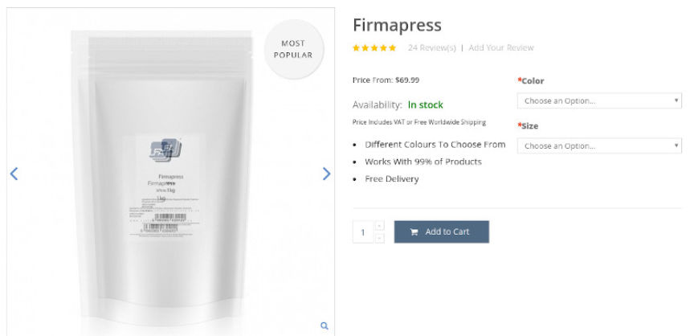
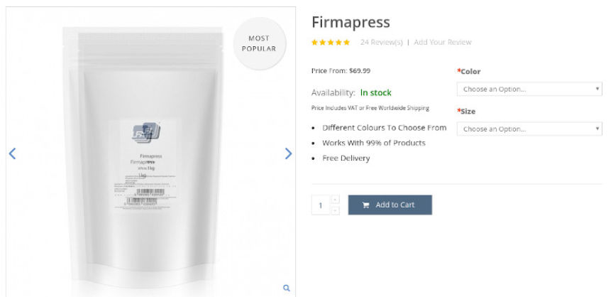

NC Counterfeit Oxy Vendor Sentenced to 20 Years in Prison
~2 min read | Published on 2022-02-03, tagged Counterfeits, Darkweb-Vendor, Drugs, Sentenced using 319 words.
A North Carolina man will be spending 240 months in prison for selling counterfeit oxycodone and Xanax pills on the darkweb.
In a press release, the US Attorney’s Office for the Eastern District of North Carolina announced that a District Court judge had sentenced 28-year-old Dylan Hunter Holcomb to 240 months in prison. Holcomb had previously admitted distributing fake oxycodone pills and fake Xanax pills on the darkweb. The “oxycodone” pills contained fentanyl instead of oxycodone.
According to court documents, Holcomb and his accomplices made a mixture of fentanyl and other compounds as the active ingredient in the pills they distributed. They pressed pills using a high-capacity pill press machine.
Investigations into Holcomb’s drug trafficking operation began in January 2020, after the United States Postal Inspection Service intercepted several drug packages. All of the intercepted packages had a similar appearance. Inside the containers, investigators found blue pills that resembled prescription oxycodone pulls. After testing the pills, investigators learned that they contained fentanyl.
In March 2020, an investigation by the Beaufort County Sheriff’s Office and the Drug Enforcement Administration revealed that the drug packages had been coming from Holcomb’s home.

While executing a search warrant at Holcomb’s residence, the investigators found and seized several bags of fentanyl, over 1,500 counterfeit Xanax and oxycodone pills that tested positive for fentanyl, and a high-capacity pill press. The investigators also seized a 3D-printed firearm and silencer, several electronic devices, and multiple cryptocurrency hardware wallets.
On June 24, 2021, Holcomb pleaded guilty to conspiring to distribute fentanyl, possessing with intent to distribute fentanyl, and possessing a firearm in furtherance of a drug trafficking crime. Chief U.S. District Judge Richard E. Myers II sentenced Holcomb to 20 years in prison on January 26, 2022.
DoJ: [i]Dark Web Fentanyl Distribution Results in 20-Year Sentence[/em] | archive.org, archive.is, archiveiya74codqgiixo33q62qlrqtkgmcitqx5u2oeqnmn5bpcbiyd.onion.
Beaufort County Sheriff’s Office: Pamlico Plantation Arrest: [i]Dark Web Fentanyl Distribution Results in 20-Year Sentence[/em] | archive.org, archive.is, archiveiya74codqgiixo33q62qlrqtkgmcitqx5u2oeqnmn5bpcbiyd.onion
In a press release, the US Attorney’s Office for the Eastern District of North Carolina announced that a District Court judge had sentenced 28-year-old Dylan Hunter Holcomb to 240 months in prison. Holcomb had previously admitted distributing fake oxycodone pills and fake Xanax pills on the darkweb. The “oxycodone” pills contained fentanyl instead of oxycodone.
Dylan Hunter Holcomb
According to court documents, Holcomb and his accomplices made a mixture of fentanyl and other compounds as the active ingredient in the pills they distributed. They pressed pills using a high-capacity pill press machine.
Investigations into Holcomb’s drug trafficking operation began in January 2020, after the United States Postal Inspection Service intercepted several drug packages. All of the intercepted packages had a similar appearance. Inside the containers, investigators found blue pills that resembled prescription oxycodone pulls. After testing the pills, investigators learned that they contained fentanyl.
In March 2020, an investigation by the Beaufort County Sheriff’s Office and the Drug Enforcement Administration revealed that the drug packages had been coming from Holcomb’s home.

The pill press found by police.
While executing a search warrant at Holcomb’s residence, the investigators found and seized several bags of fentanyl, over 1,500 counterfeit Xanax and oxycodone pills that tested positive for fentanyl, and a high-capacity pill press. The investigators also seized a 3D-printed firearm and silencer, several electronic devices, and multiple cryptocurrency hardware wallets.
On June 24, 2021, Holcomb pleaded guilty to conspiring to distribute fentanyl, possessing with intent to distribute fentanyl, and possessing a firearm in furtherance of a drug trafficking crime. Chief U.S. District Judge Richard E. Myers II sentenced Holcomb to 20 years in prison on January 26, 2022.
DoJ: [i]Dark Web Fentanyl Distribution Results in 20-Year Sentence[/em] | archive.org, archive.is, archiveiya74codqgiixo33q62qlrqtkgmcitqx5u2oeqnmn5bpcbiyd.onion.
Beaufort County Sheriff’s Office: Pamlico Plantation Arrest: [i]Dark Web Fentanyl Distribution Results in 20-Year Sentence[/em] | archive.org, archive.is, archiveiya74codqgiixo33q62qlrqtkgmcitqx5u2oeqnmn5bpcbiyd.onion